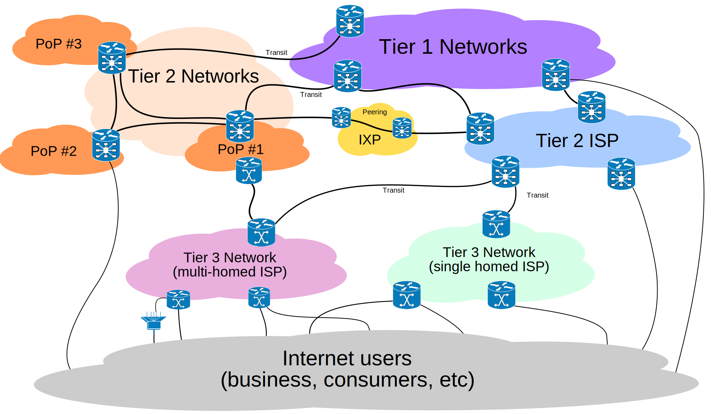

How the Internet works
A practical perspective
bit.ly/how-internet
Slawek Zak - Technical Program Manager - Google Network Edge
What is a network?
Collection of computers, servers, network devices, and other devices, connected to one another to allow the sharing of data.
Understanding the Word "Internet"
The term "Internet" comes from the combination of two words: "inter-" and "net."
- Inter-: A prefix meaning "between" or "among."
- Net: Short for "network," which is a collection of computers or devices connected together to share information.
So, "Internet" essentially means a network of networks, where multiple networks are interconnected to share information globally.
History of the Internet
ARPAnet - A Collaboration Between Military and Academia
- 1960s: US Department of Defense and universities teamed up.
- Goal: Create a resilient, attack-proof network.
- Purpose: Enable military and academic communication.
- Innovation: Introduced packet switching technology.
A Resilient Network
- Designed to function even if parts of it were destroyed.
- Multiple paths to reach its destination
- Breaks data into small packets delivered independently
- Includes redundancy in hardware and network paths to maintain service during failures or attacks.
Physical Internet connectivity
95-97% of international Internet traffic goes through almost 500 subsea cables
Cable lying ship
Interactive Quiz #1: Longest Subsea Cable
Guess the length of the longest subsea cable
-
- 11,000 km
- 25,000 km
- 45,000 km
Internet's most dangerous predator
Cable cut repair
Basic network cabling

Wireless Internet access
- Wi-Fi, cellular networks, and satellite Internet
- Satellite Internet for remote areas
Satellite Internet transmission
Google project loon
The birth of the web
- WWW made the Internet more accessible and user-friendly
- Websites and hyperlinks allow easy navigation and discovery
- Library where you can find and access the books
Commercial Internet beginnings - 1990s
- Businesses discovered Internet for commerce
- Online shopping and transactions
- Global marketplace
Interactive Quiz: How fast?
Match cable type with maximum throughput / capacity
Interactive Quiz: What is faster?
Is sending data over fiber OR disks in a car faster?
Answer
The car can travel approximately 93,850 kilometers or 2.34 times the earth equator to have a higher data throughput than a 400 Gbps fiber optic connection, assuming it is transporting 6,345 hard drives each with a capacity of 26 TB and traveling at an average speed of 100 km/h.
Higher level Internet overview
AS - Autonomous System - an "atom"
- Examples: Google (AS15169), Facebook (AS32934), Amazon (AS16509)
- AS is a network under the control of one entity
- Connected to the Internet through one or more ISPs
ISP - Internet Service Provider
- Example: Swisscom, Sunrise, Salt, Fiber7
- Allows customers to access the Internet
- Delivers connectivity through various technologies
Internet Transit Providers
- ISPs that provide access to the entire Internet
- Connect to multiple networks and exchange traffic
- Example: Level 3, Cogent, GTT
IXP - Internet Exchange Point
- Example: SWISS-IX, DE-CIX, AMS-IX, LINX
- IXP is a physical location where different networks meet
- Networks exchange traffic with each other
Peering
- Networks connect directly to each other
- Exchange traffic without going through a third party
- Reduces latency and costs
Interactive Quiz: Peering, Transit, and IXP
Match the statements with Peering, Transit, or IXP
Statements
- A physical location in which ISPs exchange data.
- Direct exchange of traffic between networks.
- Purchase of bandwidth from a larger ISP.
Possible Answers
- Peering
- Transit
- IXP
High level internet overview
Bits on the wire
What is a bit?
Smallest unit of data in a computer
Quantization - conversion to bits
- Almost everything can become bits
- Text, pictures, music, video
- ONLY bits are transmitted over the Internet
What is a protocol?
A way to regulate language
TCP/IP Protocol
- Imagine a solved puzzle you send to your friend
- TCP/IP breaks the puzzle into smaller pieces and puts them in envelopes
- Intermediaries (like routers) help direct these pieces to the right place
- Each piece needs an address to know where it's going and where it's from
- All pieces reach your friend and TCP/IP puts the puzzle in the correct order
IPv4 and IPv6 Addressing
IPv4 Addressing
- IPv4 addresses are like house numbers for computers, but there are only about 4.3 billion of them.
- Written as four numbers separated by dots (e.g., 192.168.0.1).
- We started running out of these addresses because there are so many devices on the Internet.
IPv6 Addressing
- IPv6 addresses are like new house numbers, and there are so many of them that we won't run out anytime soon.
- Written with more numbers and letters, separated by colons (e.g., 2001:0db8:85a3:0000:0000:8a2e:0370:7334).
- IPv6 makes the Internet faster and safer.
DNS - Domain Name System
What is DNS?
- DNS stands for Domain Name System.
- It works like the Internet's address book.
- Translates human-friendly website names (like www.google.com) into IP addresses (like 192.168.0.1) that computers use.
Why is DNS used?
- Easier for people to remember website names instead of long numbers.
- Saves time by quickly finding the right IP address for a website.
- Allows websites to change their IP addresses without affecting users. You can keep using the same website name.
Interactive Quiz: Internet vs. Web
Match the features with Internet or Web
Features
- Collection of networks
- Web pages and websites
- Transmits data
More features
- Uses HTTP and HTML
- Uses IP addresses
- Uses domain names
CERN and Tim Berners-Lee
- 1989, Tim Berners-Lee, invented the World Wide Web
- He created HTML, HTTP, and the first web browser
- Like the invention of the printing press, which revolutionized the spread of information
HTML and HTTP
What is HTML?
- HTML stands for HyperText Markup Language.
- It is the standard language used to create web pages.
- HTML uses tags to structure content on the web (e.g., headings, paragraphs, links).
Simple HTML Example
<!DOCTYPE html>
<html>
<head>
<title>My First Web Page</title>
</head>
<body>
<h1>Hello, World!</h1>
<p>This is my first web page.</p>
</body>
</html>
What is HTTP?
- HTTP stands for HyperText Transfer Protocol.
- It is the protocol used for transferring web pages over the Internet.
- When you type a web address, HTTP helps your browser fetch the page from the server.
What is HTTPS?
- HTTPS stands for HyperText Transfer Protocol Secure.
- It is a secure version of HTTP that encrypts data between your browser and the server.
- HTTPS protects data from hackers and eavesdroppers.
How a Web Page is Sent Over HTTP
GET / HTTP/1.1
Host: www.example.com
HTTP/1.1 200 OK
Content-Type: text/html; charset=UTF-8
<!DOCTYPE html>
<html>
<head>
<title>My First Web Page</title>
</head>
<body>
<h1>Hello, World!</h1>
<p>This is my first web page.</p>
</body>
</html>
Interactive Quiz: Match the Milestone
Match these key milestones with years
Milestones
- ARPAnet
- Invention of the WWW
- First Email
Years
- 1969
- 1971
- 1989
Interactive Quiz: Identify the Protocol
Match the following network protocols and functions.
Protocols
- HTTP
- HTTPS
- FTP
Functions
- Transferring web pages.
- Transferring files between servers.
- Securely transferring web pages.
Cybersecurity and Online Safety
Importance of Staying Safe Online
- Protects your personal information from hackers.
- Keeps your identity safe.
- Prevents unauthorized access to your accounts.
Tips for Protecting Personal Information
- Use strong, unique passwords for different accounts
- Use a password manager
- Be careful with the information you share online
- Enable two-factor authentication.
- Keep your software and apps updated.
Common Online Threats and How to Avoid Them
- Malware - Don't download suspicious files.
- Phishing - Be cautious of emails asking for personal information.
- Fake websites - Check the URL before entering information.
- Public Wi-Fi - Avoid accessing and sharing sensitive information on public networks.
Interactive Quiz: "Spot the Phishing Email"
Email 1
From: support@yourbank.com
Subject: Verify your account
Click the link to verify your account information to avoid service interruption.
Email 2
From: no-reply@shopping.com
Subject: Your order has been shipped!
Dear Customer, your order #12345 has been shipped. Track your order here.
Email 3
From: admin@securelogin.com
Subject: Password Reset Required
We noticed unusual activity. Please reset your password immediately by clicking the link below.
Interactive Quiz: Identify the Security Threat
Match the type of threat in each scenario
Scenario 1
An email asks for your password and includes a suspicious link.
Scenario 2
A pop-up on a website claims your computer is infected and prompts you to download a file.
Scenario 3
You receive a message from an unknown sender with an attachment.
Google's Perspective
Google's Digital Products
- YouTube
- Search
- Maps
- Documents
- And more
- Serving billions of users
Google's Objectives
- Affordable access
- High availability
- Low latency
How Google Achieves Its Goals
- Content Delivery Network (CDN)
- Data Centers
- Edge Points of Presence (EdgePOPs)
- Google Global Cache
Google's Initiatives and Innovations
- Project Loon and Google Fiber
- Research and development in Internet technologies
- Transformative impact on various industries